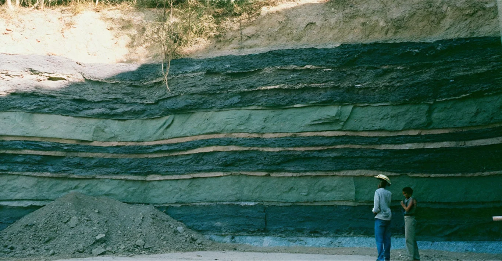

Как слои горных пород рассказывают о прошлых изменениях климата
Горные породы — это ценный источник информации о прошлых изменениях климата. Изучая слои горных пород, ученые могут реконструировать климатические условия, существовавшие на Земле в различные геологические эпохи.
Литологические индикаторы
Осадочные породы, такие как морены и тиллиты, образовавшиеся во время оледенений, являются прямыми индикаторами холодного климата. В жарком климате пустынь формируются песчаники и эвапориты, которые также дают ценную информацию о прошлом климате[4][6]. Литологические признаки, такие как минерал глауконит, который образуется при низких температурах, помогают в климатических реконструкциях[4].
Палеоклиматологические методы
Палеоклиматология использует различные методы для изучения истории климата. Биостратиграфический метод основан на анализе палеонтологических остатков, которые связаны с определенными климатическими зонами[6]. Климатостратиграфический метод позволяет увеличить точность стратиграфического расчленения, используя детальные палеоклиматические реконструкции[5].
Геохимические исследования
Геохимический состав горных пород также может рассказать о климате, в котором они образовались. Например, обломочные породы силимкунской свиты Восточной Сибири были сформированы в условиях сухого пустынного климата[3]. Анализируя химический состав пород, ученые могут восстановить климатические условия прошлого и спрогнозировать возможные изменения в будущем.
Заключение
Слои горных пород — это важный источник информации о прошлых изменениях климата. Изучая эти породы, ученые могут получить представление о климатических циклах Земли и лучше понять механизмы, которые управляют климатическими изменениями. Это знание имеет решающее значение для прогнозирования будущих климатических событий и разработки стратегий по адаптации к ним.